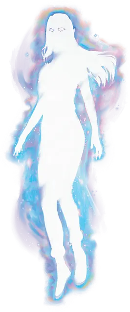

Видение звёздного света
Starlight Apparition
Средний Небожитель, обычно нейтрально-добрый

Класс Доспеха 10
Хиты 72 (16к8)
Скорость 0 футов, летая 30 футов (парит)
| мод | спас | ||
|---|---|---|---|
| СИЛ | 1 | −5 | −5 |
| ЛОВ | 11 | +0 | +0 |
| ТЕЛ | 10 | +0 | +0 |
| мод | спас | ||
|---|---|---|---|
| ИНТ | 18 | +4 | +4 |
| МДР | 16 | +3 | +3 |
| ХАР | 16 | +3 | +3 |
Сопротивление урону кислота, огонь, холод; дробящий, колющий, рубящий от немагических атак
Иммунитет к урону излучение, яд
Иммунитет к состояниям захват, испуг, истощение, окаменение, опутанность, ослепление, отравление, очарование, паралич, сбивание с ног
Чувства тёмное зрение 120 футов, пассивное Восприятие 13
Опасность 5 (1800 опыта)
Бонус мастерства +3
Особенности
Астральное существование. Видение может существовать только на Астральном плане. Если отправить его в место вне Астрального плана, оно уничтожается.
Свечение. Пока у видения есть хотя бы 1 хит, оно испускает яркий свет в пределах 20 футов и тусклый свет в пределах ещё 20 футов.
Бестелесное перемещение. Видение может перемещаться сквозь других существ и предметы, как если бы они были труднопроходимой местностью. Оно получает 5 (1к10) урона силовым полем, если оканчивает ход внутри объекта.
Необычная природа. Видение не нуждается в воздухе, еде, питье и сне.
Действия
Вспышка излучения. . Рукопашная или дальнобойная атака заклинанием: +6 к попаданию, досягаемость 5 фт. или дистанция 120 фт., одна цель. Попадание: 20 (5к6 + 3) урона излучением, и если цель — существо, она должна преуспеть в спасброске Мудрости Сл 14, иначе станет ослеплённой на 1 минуту. Цель может повторять спасбросок в конце каждого своего хода, оканчивая эффект на себе в случае успеха.
Одержимость (перезарядка 6). Один гуманоид, видимый видением в пределах 5 футов от себя, должен преуспеть в спасброске Харизмы Сл 14, иначе станет одержимым видением; после этого видение исчезает, а цель становится недееспособной и теряет контроль над своим телом. Теперь видение контролирует это тело, но цель не теряет сознание. Видение не может быть целью атак, заклинаний и прочих эффектов, и оно сохраняет своё мировоззрение, Интеллект, Мудрость, Харизму и иммунитет к испугу и очарованию. Во всём остальном видение использует статистику одержимой цели, но оно не получает доступ к знаниям, классовым умениям и владениям цели.
Одержимость длится до тех пор, пока хиты тела не опустятся до 0, пока видение не окончит его бонусным действием, тело не покинет Астральный план или пока видение не заставят уйти таким эффектом как заклинание рассеивание добра и зла. Когда одержимость заканчивается, видение возвращается в свободное пространство в пределах 5 футов от тела. Если оно появляется в месте не на Астральном плане, видение уничтожается. Цель получает на 24 часа иммунитет к Одержимости этого видения после того как преуспеет в спасброске или после того как одержимость закончится.
Описание
Прозрачные проекции несчастных душ, погибших в Диком космосе или в Астральном море, известны как «видения звёздного света». Каждое из них выглядит как бесплотный светящийся облик, напоминающий прежнего хозяина, но с глазами полными яркого света.
Видение звёздного света отличается от призрака. Призрак обречен блуждать в том месте, где погиб, пока не будет выполнено обещание или цель, не достигнутая им при жизни, цель видения — помочь другому человеку избежать или преодолеть опасное препятствие, выполнить трудную задачу. Видение появляется, когда душа умершего человека из места своего упокоения в загробном мире с помощью божества или другой могущественной небесной сущности проецирует призрачную копию себя на огромное расстояние. Видение существует лишь до тех пор, пока его помощь необходима для выполнения задачи. Затем оно исчезает и никогда больше не возвращается.